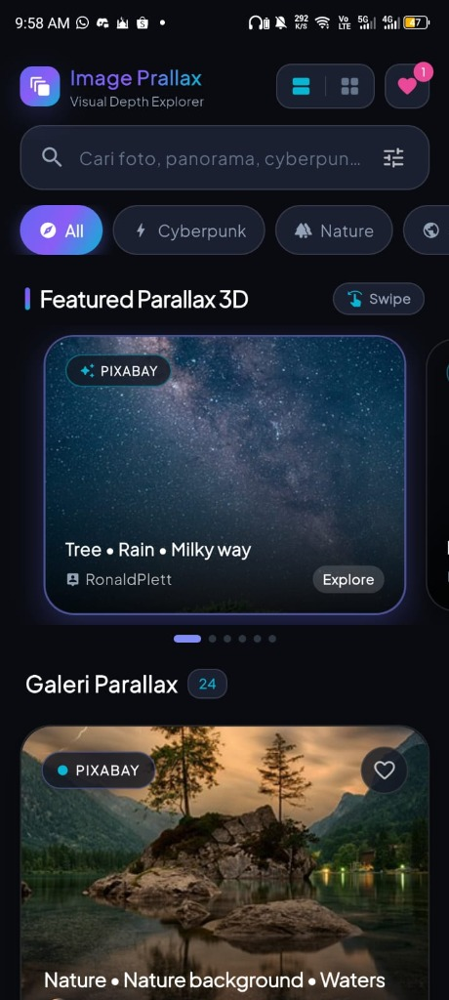
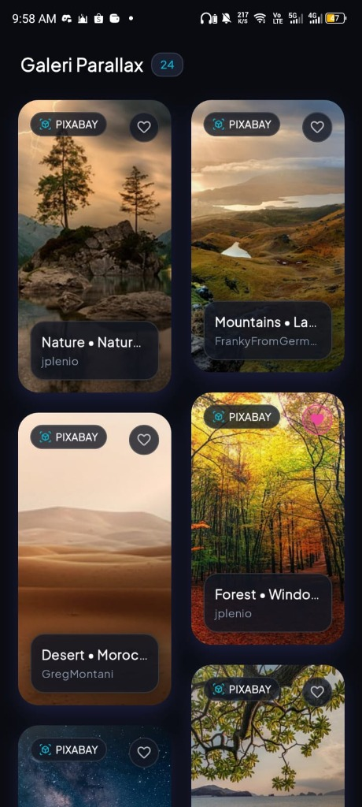
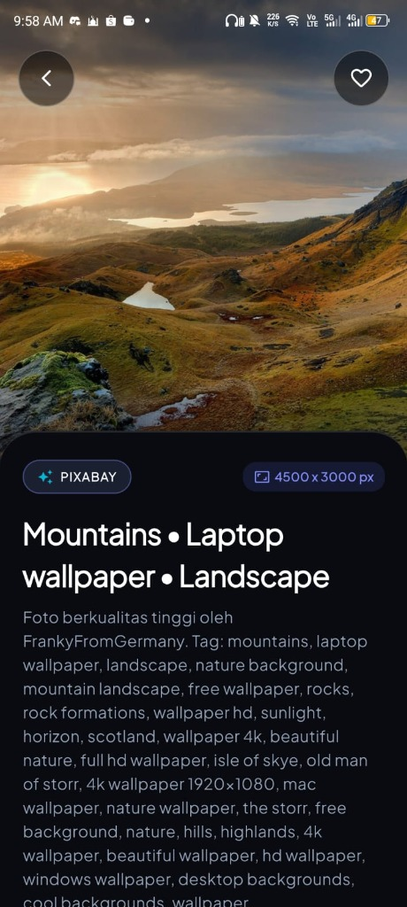
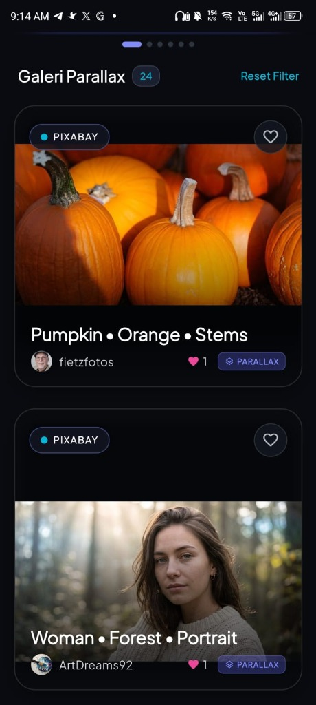

IMAGE PARALLAX — VISUAL DEPTH EXPLORER
Aplikasi galeri visual futuristik dengan simulasi kedalaman multi-layer 3D Parallax saat pengguna menggeser dan menelusuri katalog gambar. Menggabungkan kalkulasi matriks transformasi 3D kustom, arsitektur Masonry Grid responsif, integrasi Pixabay REST API jutaan foto, dan preview resolusi Ultra-HD.
EKSPLORASI TAMPILAN & FITUR UTAMA APLIKASI

Beranda Eksplorasi & Featured Parallax 3D
Halaman beranda bergaya cyberpunk modern yang memikat dengan kartu sorotan Featured Parallax 3D, navigasi chip kategori dinamis, dan kolom live search.
- Featured Parallax 3D Carousel: Kartu sorotan dengan fisika geser halus (swipe physics) yang menghadirkan efek kedalaman ruang 3D saat kartu digerakkan.
- Kategori Filter Tematik Cepat: Tombol filter sekali sentuh untuk berbagai tema visual populer (All, Cyberpunk, Nature, Architecture, Minimal).
- Live Search Responsive: Pencarian real-time jutaan foto berkualitas tinggi berdasarkan kata kunci atau tag fotografer.
- Pemberian Penghargaan Sumber: Integrasi metadata fotografer dan label resmi Pixabay API.
Tampilan Galeri Masonry Grid (2-Kolom)
Tata letak kisi 2-kolom responsif yang menampilkan rasio foto bervariasi secara proporsional dengan efek parallax scroll halus pada setiap kartu gambar.
- Dual-Column Responsive Layout: Pengaturan grid dinamis yang menyesuaikan aspek rasio gambar potret maupun lanskap tanpa cropping paksa.
- Parallax Offset per Kartu: Setiap kartu dalam grid menghitung posisi viewport dan menggeser layer gambar secara dinamis saat discroll.
- Kartu Info Cerdas: Menampilkan judul karya, nama fotografer kontributor, serta tombol favorit (heart like) instan.
- Mode Tampilan Switcher: Kemudahan berganti antara tampilan Grid 2-kolom dan tampilan List Feed Parallax besar.
Pratinjau Wallpaper Ultra-HD & Metadata Lengkap
Pengalaman visual imersif layar penuh dengan kualitas resolusi tertinggi (hingga 4500 × 3000 px) dilengkapi panel lembar bawah (bottom sheet) informatif.
- Tampilan Layar Penuh (Edge-to-Edge): Menampilkan keindahan foto alam, lanskap pegunungan, dan karya seni tanpa distraksi antarmuka.
- Lencana Resolusi Asli: Menampilkan dimensi piksel resmi foto berkualitas tinggi (contoh: 4500 × 3000 px).
- Deskripsi & Kurasi Tag: Rincian narasi foto, nama fotografer internasional, serta daftar tag pencarian terkait.
- Aksi Cepat: Tombol favorit satu ketukan dan tombol kembali yang responsif.
Tampilan Feed Parallax Vertikal & Filter Reset
Mode feed berukuran besar yang memaksimalkan efek gerak multi-layer parallax scrolling pada gambar resolusi tinggi.
- Multi-Layer Parallax Flow: Latar belakang gambar dan label kartu bergerak dengan kecepatan diferensial saat discroll ke atas dan bawah.
- Lencana Interaktif "PARALLAX": Indikator visual kartu interaktif dengan status jumlah favorit komunitas.
- Reset Filter Cepat: Tombol pintasan untuk mengembalikan tampilan ke seluruh katalog dengan cepat.
- Lazy Loading & Image Caching: Pemuatan aset hemat memori dengan CachedNetworkImage untuk performa scrolling tetap 60 FPS tanpa patah-patah.
EKSPLORASI ANTARMUKA 3D PARALLAX & ULTRA-HD
Beranda & Hero Parallax 3D
Carousel swipe kedalaman 3D interaktif, chip filter tematik, dan search bar.

Galeri Masonry Grid Responsif
Tata letak kisi 2-kolom dinamis dengan efek parallax offset halus per kartu.

Detail Wallpaper Ultra-HD
Resolusi maksimal 4500 × 3000 px, narasi karya, fotografer credit, dan kurasi tag.

Feed Parallax Multi-Layer
Mode scroll vertikal penuh dengan kecepatan layer diferensial dan 60 FPS.
ARSITEKTUR TEKNIS & MOTION ENGINE
CUSTOM PARALLAX SCROLL CONTROLLER
Implementasi kalkulasi Matrix4 transform dan Flow Delegate kustom untuk menghitung rasio posisi kartu terhadap viewport secara real-time demi mencapai efek kedalaman 3D yang stabil.
INTEGRASI PIXABAY REST API
Sinkronisasi katalog jutaan foto berkualitas tinggi secara asinkron dengan paginasi cerdas, debounce input pencarian, dan penanganan status koneksi yang tangguh.
EFFICIENT MEMORY & IMAGE CACHING
Manajemen memori GPU dan disk cache menggunakan cache provider teroptimasi untuk mencegah memory leak saat merender puluhan foto resolusi tinggi secara bersamaan.
CYBERPUNK NEON DARK UI
Estetika antarmuka modern bernuansa neon violet & midnight navy dengan layout switchable (Masonry Grid vs Parallax Feed) dan transisi micro-animation halus.
DEMO VIDEO GERAK PARALLAX MULTI-LAYER
Saksikan simulasi fisika scrolling 3D parallax dan transisi visual multi-layer secara langsung di video demo aplikasi:
TEKNOLOGI & DEPENDENSI UTAMA
Tertarik Mengimplementasikan Animasi Parallax & Motion Serupa?
Tingkatkan kesan visual produk digital Anda dengan micro-animations, fisika 3D yang halus, dan arsitektur rendering gambar berkinerja tinggi.